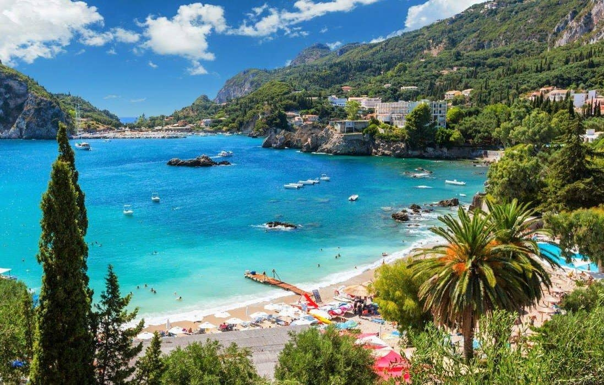

PALEOKASTRITSA, CORFU
Long before The Durrell’s hit our TV screens Corfu has been charming people for centuries with its beautiful mix of Venetian and neo-classical architecture, stunning beaches and proximity to both the Dalmatian Coast and Italy.
Whilst some pockets are largely populated by large all-inclusive resorts there are magical gems such as the 5 bays that make up the village of Paleokastritsa, which translates to ‘old castle’. This is a place that remains one of the best holidays of our lives and transforms from a busy tourist destination during the day to a quiet magical paradise in the evenings.